library(boot)
library(broom.mixed)
library(collapse)
library(dataverse)
library(gutenbergr)
library(janitor)
library(knitr)
library(marginaleffects)
library(modelsummary)
library(rstanarm)
library(tidybayes)
library(tidyverse)13 Generalized linear models
Prerequisites
- Read Regression and Other Stories, (Gelman, Hill, and Vehtari 2020)
- Focus on Chapters 13 “Logistic regression” and 15 “Other generalized linear models”, which provide a detailed guide to generalized linear models.
- Read An Introduction to Statistical Learning with Applications in R, (James et al. [2013] 2021)
- Focus on Chapter 4 “Classification”, which is a complementary treatment of generalized linear models from a different perspective.
- Read We Gave Four Good Pollsters the Same Raw Data. They Had Four Different Results, (Cohn 2016)
- Details a situation in which different modeling choices, given the same dataset, result in different forecasts.
Key concepts and skills
- Linear regression can be generalized for alternative types of outcome variables.
- Logistic regression can be used when we have a binary outcome variable.
- Poisson regression can be used when we have an integer count outcome variable. A variant—negative binomial regression—is often also considered because the assumptions are less onerous.
- Multilevel modeling is an approach that can allow us to make better use of our data.
Software and packages
- Base R (R Core Team 2023)
boot(Canty and Ripley 2021; Davison and Hinkley 1997)broom.mixed(Bolker and Robinson 2022)collapse(Krantz 2023)dataverse(Kuriwaki, Beasley, and Leeper 2023)gutenbergr(Johnston and Robinson 2022)janitor(Firke 2023)knitr(Xie 2023)marginaleffects(Arel-Bundock 2023)modelsummary(Arel-Bundock 2022)rstanarm(Goodrich et al. 2023)tidybayes(Kay 2022)tidyverse(Wickham et al. 2019)
13.1 Introduction
Linear models, covered in Chapter 12, have evolved substantially over the past century. Francis Galton, mentioned in Chapter 8, and others of his generation used linear regression in earnest in the late 1800s and early 1900s. Binary outcomes quickly became of interest and needed special treatment, leading to the development and wide adaption of logistic regression and similar methods in the mid-1900s (Cramer 2003). The generalized linear model framework came into being, in a formal sense, in the 1970s with Nelder and Wedderburn (1972). Generalized linear models (GLMs) broaden the types of outcomes that are allowed. We still model outcomes as a linear function, but we are less constrained. The outcome can be anything in the exponential family, and popular choices include the logistic distribution and the Poisson distribution. For the sake of a completed story but turning to approaches that are beyond the scope of this book, a further generalization of GLMs is generalized additive models (GAMs) where we broaden the structure of the explanatory side. We still explain the outcome variable as an additive function of various bits and pieces, but those bits and pieces can be functions. This framework was proposed in the 1990s by Hastie and Tibshirani (1990).
In terms of generalized linear models, in this chapter we consider logistic, Poisson, and negative binomial regression. But we also explore a variant that is relevant to both linear models and generalized linear models: multilevel modeling. This is when we take advantage of some type of grouping that exists within our dataset.
13.2 Logistic regression
Linear regression is a useful way to better understand our data. But it assumes a continuous outcome variable that can take any number on the real line. We would like some way to use this same machinery when we cannot satisfy this condition. We turn to logistic and Poisson regression for binary and count outcome variables, respectively. They are still linear models, because the predictor variables enter in a linear fashion.
Logistic regression, and its close variants, are useful in a variety of settings, from elections (Wang et al. 2015) through to horse racing (Chellel 2018; Bolton and Chapman 1986). We use logistic regression when the outcome variable is a binary outcome, such as 0 or 1, or “yes” or “no”. Although the presence of a binary outcome variable may sound limiting, there are a lot of circumstances in which the outcome either naturally falls into this situation or can be adjusted into it. For instance, win or lose, available or not available, support or not.
The foundation of this is the Bernoulli distribution. There is a certain probability, \(p\), of outcome “1” and the remainder, \(1-p\), for outcome “0”. We can use rbinom() with one trial (“size = 1”) to simulate data from the Bernoulli distribution.
set.seed(853)
bernoulli_example <-
tibble(draws = rbinom(n = 20, size = 1, prob = 0.1))
bernoulli_example |> pull(draws) [1] 0 0 0 0 0 0 0 0 0 0 1 0 0 0 0 0 0 0 0 0One reason to use logistic regression is that we will be modeling a probability, hence it will be bounded between 0 and 1. With linear regression we may end up with values outside this. The foundation of logistic regression is the logit function:
\[
\mbox{logit}(x) = \log\left(\frac{x}{1-x}\right).
\] This will transpose values between 0 and 1 onto the real line. For instance, logit(0.1) = -2.2, logit(0.5) = 0, and logit(0.9) = 2.2 (Figure 13.1). We call this the “link function”. It relates the distribution of interest in a generalized linear model to the machinery we use in linear models.

13.2.1 Simulated example: day or night
To illustrate logistic regression, we will simulate data on whether it is a weekday or weekend, based on the number of cars on the road. We will assume that on weekdays the road is busier.
set.seed(853)
week_or_weekday <-
tibble(
num_cars = sample.int(n = 100, size = 1000, replace = TRUE),
noise = rnorm(n = 1000, mean = 0, sd = 10),
is_weekday = if_else(num_cars + noise > 50, 1, 0)
) |>
select(-noise)
week_or_weekday# A tibble: 1,000 × 2
num_cars is_weekday
<int> <dbl>
1 9 0
2 64 1
3 90 1
4 93 1
5 17 0
6 29 0
7 84 1
8 83 1
9 3 0
10 33 1
# ℹ 990 more rowsWe can use glm() from base R to do a quick estimation. In this case we will try to work out whether it is a weekday or weekend, based on the number of cars we can see. We are interested in estimating Equation 13.1:
\[ \mbox{Pr}(y_i=1) = \mbox{logit}^{-1}\left(\beta_0+\beta_1 x_i\right) \tag{13.1}\]
where \(y_i\) is whether it is a weekday and \(x_i\) is the number of cars on the road.
week_or_weekday_model <-
glm(
is_weekday ~ num_cars,
data = week_or_weekday,
family = "binomial"
)
summary(week_or_weekday_model)
Call:
glm(formula = is_weekday ~ num_cars, family = "binomial", data = week_or_weekday)
Coefficients:
Estimate Std. Error z value Pr(>|z|)
(Intercept) -9.48943 0.74492 -12.74 <2e-16 ***
num_cars 0.18980 0.01464 12.96 <2e-16 ***
---
Signif. codes: 0 '***' 0.001 '**' 0.01 '*' 0.05 '.' 0.1 ' ' 1
(Dispersion parameter for binomial family taken to be 1)
Null deviance: 1386.26 on 999 degrees of freedom
Residual deviance: 337.91 on 998 degrees of freedom
AIC: 341.91
Number of Fisher Scoring iterations: 7The estimated coefficient on the number of cars is 0.19. The interpretation of coefficients in logistic regression is more complicated than linear regression as they relate to changes in the log-odds of the binary outcome. For instance, the estimate of 0.19 is the average change in the log-odds of it being a weekday with observing one extra car on the road. The coefficient is positive which means an increase. As it is non-linear, if we want to specify a particular change, then this will be different for different baseline levels of the observation. That is, an increase of 0.19 log-odds has a larger impact when the baseline log-odds are 0, compared to 2.
We can translate our estimate into the probability of it being a weekday, for a given number of cars. We can add the implied probability that it is a weekday for each observation using predictions() from marginaleffects.
week_or_weekday_predictions <-
predictions(week_or_weekday_model) |>
as_tibble()
week_or_weekday_predictions# A tibble: 1,000 × 7
rowid estimate p.value conf.low conf.high is_weekday num_cars
<int> <dbl> <dbl> <dbl> <dbl> <dbl> <int>
1 1 0.000417 1.40e-36 0.000125 0.00139 0 9
2 2 0.934 9.33e-27 0.898 0.959 1 64
3 3 0.999 1.97e-36 0.998 1.00 1 90
4 4 1.00 1.10e-36 0.999 1.00 1 93
5 5 0.00190 1.22e-35 0.000711 0.00508 0 17
6 6 0.0182 3.34e-32 0.00950 0.0348 0 29
7 7 0.998 1.00e-35 0.996 0.999 1 84
8 8 0.998 1.42e-35 0.995 0.999 1 83
9 9 0.000134 5.22e-37 0.0000338 0.000529 0 3
10 10 0.0382 1.08e-29 0.0222 0.0649 1 33
# ℹ 990 more rowsAnd we can then graph the probability that our model implies, for each observation, of it being a weekday (Figure 13.2). This is a nice opportunity to consider a few different ways of illustrating the fit. While it is common to use a scatterplot (Figure 13.2 (a)), this is also an opportunity to use an ECDF (Figure 13.2 (b)).
# Panel (a)
week_or_weekday_predictions |>
mutate(is_weekday = factor(is_weekday)) |>
ggplot(aes(x = num_cars, y = estimate, color = is_weekday)) +
geom_jitter(width = 0.01, height = 0.01, alpha = 0.3) +
labs(
x = "Number of cars that were seen",
y = "Estimated probability it is a weekday",
color = "Was actually weekday"
) +
theme_classic() +
scale_color_brewer(palette = "Set1") +
theme(legend.position = "bottom")
# Panel (b)
week_or_weekday_predictions |>
mutate(is_weekday = factor(is_weekday)) |>
ggplot(aes(x = num_cars, y = estimate, color = is_weekday)) +
stat_ecdf(geom = "point", alpha = 0.75) +
labs(
x = "Number of cars that were seen",
y = "Estimated probability it is a weekday",
color = "Actually weekday"
) +
theme_classic() +
scale_color_brewer(palette = "Set1") +
theme(legend.position = "bottom")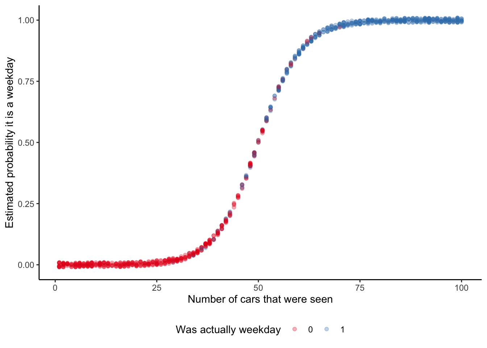
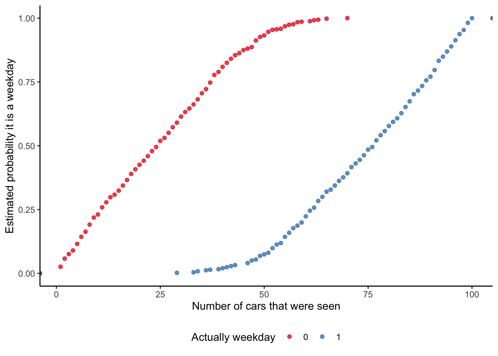
The marginal effect at each observation is of interest because it provides a sense of how this probability is changing. It enables us to say that at the median (which in this case is if we were to see 50 cars) the probability of it being a weekday increases by almost five per cent if we were to see another car (Table 13.1).
slopes(week_or_weekday_model, newdata = "median") |>
select(term, estimate, std.error) |>
kable(
col.names = c("Term", "Estimate", "Standard error"),
digits = 3, booktabs = TRUE
)| Term | Estimate | Standard error |
|---|---|---|
| num_cars | 0.047 | 0.004 |
To more thoroughly examine the situation we might want to build a Bayesian model using rstanarm. As in Chapter 12 we will specify priors for our model, but these will just be the default priors that rstanarm uses:
\[ \begin{aligned} y_i|\pi_i & \sim \mbox{Bern}(\pi_i) \\ \mbox{logit}(\pi_i) & = \beta_0+\beta_1 x_i \\ \beta_0 & \sim \mbox{Normal}(0, 2.5)\\ \beta_1 & \sim \mbox{Normal}(0, 2.5) \end{aligned} \] where \(y_i\) is whether it is a weekday (actually 0 or 1), \(x_i\) is the number of cars on the road, and \(\pi_i\) is the probability that observation \(i\) is a weekday.
week_or_weekday_rstanarm <-
stan_glm(
is_weekday ~ num_cars,
data = week_or_weekday,
family = binomial(link = "logit"),
prior = normal(location = 0, scale = 2.5, autoscale = TRUE),
prior_intercept = normal(location = 0, scale = 2.5, autoscale = TRUE),
seed = 853
)
saveRDS(
week_or_weekday_rstanarm,
file = "week_or_weekday_rstanarm.rds"
)The results of our Bayesian model are similar to the quick model we built using base (Table 13.2).
modelsummary(
list(
"Day or night" = week_or_weekday_rstanarm
)
)| Day or night | |
|---|---|
| (Intercept) | -9.464 |
| number_of_cars | 0.186 |
| Num.Obs. | 1000 |
| R2 | 0.779 |
| Log.Lik. | -177.899 |
| ELPD | -179.8 |
| ELPD s.e. | 13.9 |
| LOOIC | 359.6 |
| LOOIC s.e. | 27.9 |
| WAIC | 359.6 |
| RMSE | 0.24 |
Table 13.2 makes it clear that each of the approaches is similar in this case. They agree on the direction of the effect of seeing an extra car on the probability of it being a weekday. Even the magnitude of the effect is estimated to be similar.
13.2.2 Political support in the United States
One area where logistic regression is often used is political polling. In many cases voting implies the need for one preference ranking, and so issues are reduced, whether appropriately or not, to “support” or “not support”.
As a reminder, the workflow we advocate in this book is:
\[\mbox{Plan} \rightarrow \mbox{Simulate} \rightarrow \mbox{Acquire} \rightarrow \mbox{Explore} \rightarrow \mbox{Share}\]
While the focus here is the exploration of data using models, we still need to do the other aspects. We begin by planning. In this case, we are interested in US political support. In particular we are interested in whether we can forecast who a respondent is likely to vote for, based only on knowing their highest level of education and gender. That means we are interested in a dataset with variables for who an individual voted for, and some of their characteristics, such as gender and education. A quick sketch of such a dataset is Figure 13.3 (a). We would like our model to average over these points. A quick sketch is Figure 13.3 (b).
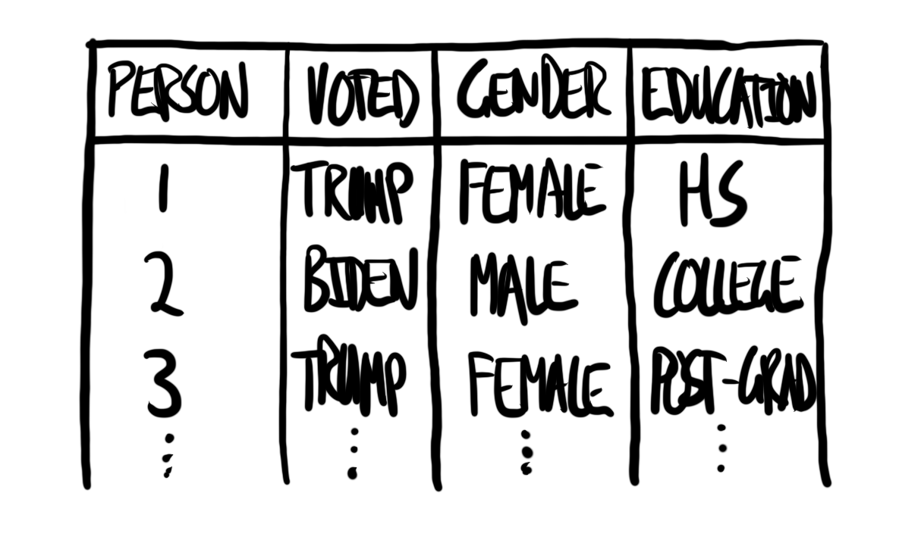
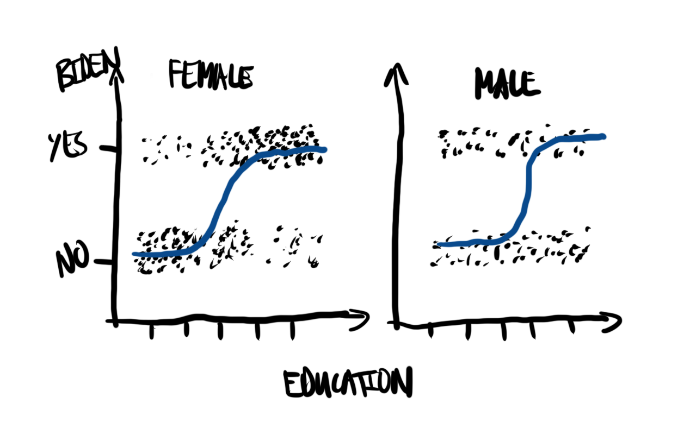
We will simulate a dataset where the chance that a person supports Biden depends on their gender and education.
set.seed(853)
num_obs <- 1000
us_political_preferences <- tibble(
education = sample(0:4, size = num_obs, replace = TRUE),
gender = sample(0:1, size = num_obs, replace = TRUE),
support_prob = ((education + gender) / 5),
) |>
mutate(
supports_biden = if_else(runif(n = num_obs) < support_prob, "yes", "no"),
education = case_when(
education == 0 ~ "< High school",
education == 1 ~ "High school",
education == 2 ~ "Some college",
education == 3 ~ "College",
education == 4 ~ "Post-grad"
),
gender = if_else(gender == 0, "Male", "Female")
) |>
select(-support_prob, supports_biden, gender, education)For the actual data we can use the 2020 Cooperative Election Study (CES) (Schaffner, Ansolabehere, and Luks 2021). This is a long-standing annual survey of US political opinion. In 2020, there were 61,000 respondents who completed the post-election survey. The sampling methodology, detailed in Ansolabehere, Schaffner, and Luks (2021, 13), relies on matching and is an accepted approach that balances sampling concerns and cost.
We can access the CES using get_dataframe_by_name() after installing and loading dataverse. This approach was introduced in Chapter 7 and Chapter 10. We save the data that are of interest to us, and then refer to that saved dataset.
ces2020 <-
get_dataframe_by_name(
filename = "CES20_Common_OUTPUT_vv.csv",
dataset = "10.7910/DVN/E9N6PH",
server = "dataverse.harvard.edu",
.f = read_csv
) |>
select(votereg, CC20_410, gender, educ)
write_csv(ces2020, "ces2020.csv")ces2020 <-
read_csv(
"ces2020.csv",
col_types =
cols(
"votereg" = col_integer(),
"CC20_410" = col_integer(),
"gender" = col_integer(),
"educ" = col_integer()
)
)
ces2020# A tibble: 61,000 × 4
votereg CC20_410 gender educ
<int> <int> <int> <int>
1 1 2 1 4
2 2 NA 2 6
3 1 1 2 5
4 1 1 2 5
5 1 4 1 5
6 1 2 1 3
7 2 NA 1 3
8 1 2 2 3
9 1 2 2 2
10 1 1 2 5
# ℹ 60,990 more rowsWhen we look at the actual data, there are concerns that we did not anticipate in our sketches. We use the codebook to investigate this more thoroughly. We only want respondents who are registered to vote, and we are only interested in those that voted for either Biden or Trump. We see that when the variable “CC20_410” is 1, then this means the respondent supported Biden, and when it is 2 that means Trump. We can filter to only those respondents and then add more informative labels. Genders of “female” and “male” is what is available from the CES, and when the variable “gender” is 1, then this means “male”, and when it is 2 this means “females”. Finally, the codebook tells us that “educ” is a variable from 1 to 6, in increasing levels of education.
ces2020 <-
ces2020 |>
filter(votereg == 1,
CC20_410 %in% c(1, 2)) |>
mutate(
voted_for = if_else(CC20_410 == 1, "Biden", "Trump"),
voted_for = as_factor(voted_for),
gender = if_else(gender == 1, "Male", "Female"),
education = case_when(
educ == 1 ~ "No HS",
educ == 2 ~ "High school graduate",
educ == 3 ~ "Some college",
educ == 4 ~ "2-year",
educ == 5 ~ "4-year",
educ == 6 ~ "Post-grad"
),
education = factor(
education,
levels = c(
"No HS",
"High school graduate",
"Some college",
"2-year",
"4-year",
"Post-grad"
)
)
) |>
select(voted_for, gender, education)In the end we are left with 43,554 respondents (Figure 13.4).
ces2020 |>
ggplot(aes(x = education, fill = voted_for)) +
stat_count(position = "dodge") +
facet_wrap(facets = vars(gender)) +
theme_minimal() +
labs(
x = "Highest education",
y = "Number of respondents",
fill = "Voted for"
) +
coord_flip() +
scale_fill_brewer(palette = "Set1") +
theme(legend.position = "bottom")
The model that we are interested in is:
\[ \begin{aligned} y_i|\pi_i & \sim \mbox{Bern}(\pi_i) \\ \mbox{logit}(\pi_i) & = \beta_0+\beta_1 \times \mbox{gender}_i + \beta_2 \times \mbox{education}_i \\ \beta_0 & \sim \mbox{Normal}(0, 2.5)\\ \beta_1 & \sim \mbox{Normal}(0, 2.5)\\ \beta_2 & \sim \mbox{Normal}(0, 2.5) \end{aligned} \]
where \(y_i\) is the political preference of the respondent and equal to 1 if Biden and 0 if Trump, \(\mbox{gender}_i\) is the gender of the respondent, and \(\mbox{education}_i\) is the education of the respondent. We could estimate the parameters using stan_glm(). Note that the model is a generally accepted short-hand. In practice rstanarm converts categorical variables into a series of indicator variables and there are multiple coefficients estimated. In the interest of run-time we will randomly sample 1,000 observations and fit the model on that, rather than the full dataset.
set.seed(853)
ces2020_reduced <-
ces2020 |>
slice_sample(n = 1000)
political_preferences <-
stan_glm(
voted_for ~ gender + education,
data = ces2020_reduced,
family = binomial(link = "logit"),
prior = normal(location = 0, scale = 2.5, autoscale = TRUE),
prior_intercept =
normal(location = 0, scale = 2.5, autoscale = TRUE),
seed = 853
)
saveRDS(
political_preferences,
file = "political_preferences.rds"
)political_preferences <-
readRDS(file = "political_preferences.rds")The results of our model are interesting. They suggest males were less likely to vote for Biden, and that there is a considerable effect of education (Table 13.3).
modelsummary(
list(
"Support Biden" = political_preferences
),
statistic = "mad"
)| Support Biden | |
|---|---|
| (Intercept) | -0.745 |
| (0.517) | |
| genderMale | -0.477 |
| (0.136) | |
| educationHigh school graduate | 0.617 |
| (0.534) | |
| educationSome college | 1.494 |
| (0.541) | |
| education2-year | 0.954 |
| (0.538) | |
| education4-year | 1.801 |
| (0.532) | |
| educationPost-grad | 1.652 |
| (0.541) | |
| Num.Obs. | 1000 |
| R2 | 0.064 |
| Log.Lik. | -646.335 |
| ELPD | -653.5 |
| ELPD s.e. | 9.4 |
| LOOIC | 1307.0 |
| LOOIC s.e. | 18.8 |
| WAIC | 1307.0 |
| RMSE | 0.48 |
It can be useful to plot the credibility intervals of these predictors (Figure 13.5). In particular this might be something that is especially useful in an appendix.
modelplot(political_preferences, conf_level = 0.9) +
labs(x = "90 per cent credibility interval")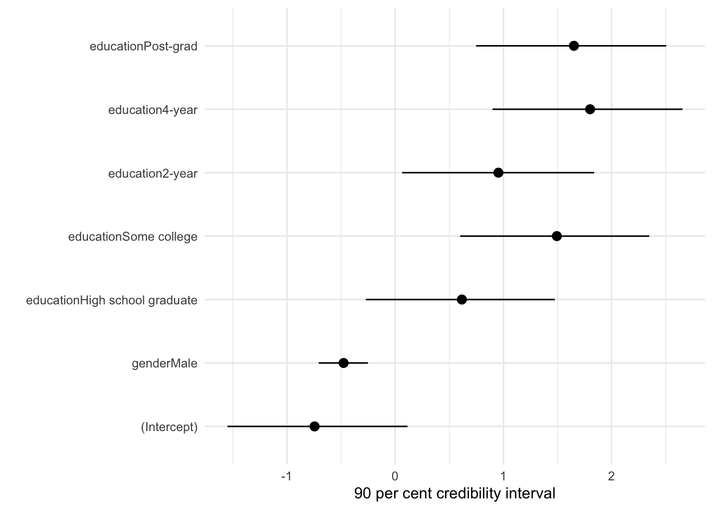
13.3 Poisson regression
When we have count data we should initially think to take advantage of the Poisson distribution. One application of Poisson regression is modeling the outcomes of sports. For instance Burch (2023) builds a Poisson model of hockey outcomes, following Baio and Blangiardo (2010) who build a Poisson model of football outcomes.
The Poisson distribution is governed by one parameter, \(\lambda\). This distributes probabilities over non-negative integers and hence governs the shape of the distribution. As such, the Poisson distribution has the interesting feature that the mean is also the variance. As the mean increases, so does the variance. The Poisson probability mass function is (Pitman 1993, 121):
\[P_{\lambda}(k) = e^{-\lambda}\lambda^k/k!\mbox{, for }k=0,1,2,\dots\] We can simulate \(n=20\) draws from the Poisson distribution with rpois(), where \(\lambda\) is equal to three.
rpois(n = 20, lambda = 3) [1] 3 1 5 9 1 5 2 3 3 2 4 3 3 4 2 2 3 3 3 3We can also look at what happens to the distribution as we change the value of \(\lambda\) (Figure 13.6).
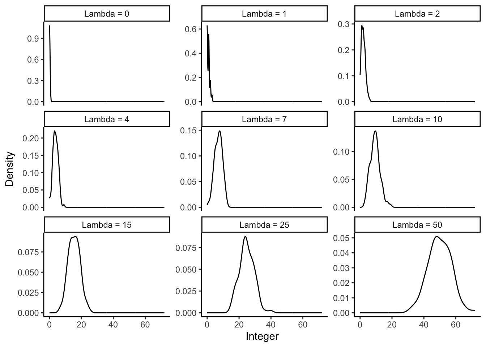
13.3.1 Simulated example: number of As by department
To illustrate the situation, we could simulate data about the number of As that are awarded in each university course. In this simulated example, we consider three departments, each of which has many courses. Each course will award a different number of As.
set.seed(853)
class_size <- 26
count_of_A <-
tibble(
# From Chris DuBois: https://stackoverflow.com/a/1439843
department =
c(rep.int("1", 26), rep.int("2", 26), rep.int("3", 26)),
course = c(
paste0("DEP_1_", letters),
paste0("DEP_2_", letters),
paste0("DEP_3_", letters)
),
number_of_As = c(
rpois(n = class_size, lambda = 5),
rpois(n = class_size, lambda = 10),
rpois(n = class_size, lambda = 20)
)
)count_of_A |>
ggplot(aes(x = number_of_As)) +
geom_histogram(aes(fill = department), position = "dodge") +
labs(
x = "Number of As awarded",
y = "Number of classes",
fill = "Department"
) +
theme_classic() +
scale_fill_brewer(palette = "Set1") +
theme(legend.position = "bottom")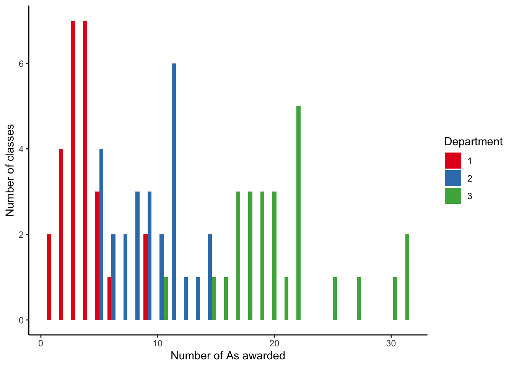
Our simulated dataset has the number of As awarded by courses, which are structured within departments (Figure 13.7). In Chapter 15, we will take advantage of this departmental structure, but for now we just ignore it and focus on differences between departments.
The model that we are interested in estimating is:
\[ \begin{aligned} y_i|\lambda_i &\sim \mbox{Poisson}(\lambda_i)\\ \log(\lambda_i) & = \beta_0 + \beta_1 \times \mbox{department}_i \end{aligned} \] where \(y_i\) is the number of A grades awarded, and we are interested in how this differs by department.
We can use glm() from base R to get a quick sense of the data. This function is quite general, and we specify Poisson regression by setting the “family” parameter. The estimates are contained in the first column of Table 13.4.
grades_base <-
glm(
number_of_As ~ department,
data = count_of_A,
family = "poisson"
)
summary(grades_base)
Call:
glm(formula = number_of_As ~ department, family = "poisson",
data = count_of_A)
Coefficients:
Estimate Std. Error z value Pr(>|z|)
(Intercept) 1.3269 0.1010 13.135 < 2e-16 ***
department2 0.8831 0.1201 7.353 1.94e-13 ***
department3 1.7029 0.1098 15.505 < 2e-16 ***
---
Signif. codes: 0 '***' 0.001 '**' 0.01 '*' 0.05 '.' 0.1 ' ' 1
(Dispersion parameter for poisson family taken to be 1)
Null deviance: 426.201 on 77 degrees of freedom
Residual deviance: 75.574 on 75 degrees of freedom
AIC: 392.55
Number of Fisher Scoring iterations: 4As with logistic regression, the interpretation of the coefficients from Poisson regression can be difficult. The interpretation of the coefficient on “department2” is that it is the log of the expected difference between departments. We expect \(e^{0.883} \approx 2.4\) and \(e^{1.703} \approx 5.5\) as many A grades in departments 2 and 3, respectively, compared with department 1 (Table 13.4).
We could build a Bayesian model and estimate it with rstanarm (Table 13.4).
\[ \begin{aligned} y_i|\lambda_i &\sim \mbox{Poisson}(\lambda_i)\\ \log(\lambda_i) & = \beta_0 + \beta_1 \times\mbox{department}_i\\ \beta_0 & \sim \mbox{Normal}(0, 2.5)\\ \beta_1 & \sim \mbox{Normal}(0, 2.5) \end{aligned} \] where \(y_i\) is the number of As awarded.
grades_rstanarm <-
stan_glm(
number_of_As ~ department,
data = count_of_A,
family = poisson(link = "log"),
prior = normal(location = 0, scale = 2.5, autoscale = TRUE),
prior_intercept = normal(location = 0, scale = 2.5, autoscale = TRUE),
seed = 853
)
saveRDS(
grades_rstanarm,
file = "grades_rstanarm.rds"
)The results are in Table 13.4.
modelsummary(
list(
"Number of As" = grades_rstanarm
)
)| Number of As | |
|---|---|
| (Intercept) | 1.321 |
| department2 | 0.884 |
| department3 | 1.706 |
| Num.Obs. | 78 |
| Log.Lik. | -193.355 |
| ELPD | -196.2 |
| ELPD s.e. | 7.7 |
| LOOIC | 392.4 |
| LOOIC s.e. | 15.4 |
| WAIC | 392.4 |
| RMSE | 3.41 |
As with logistic regression, we can use slopes() from marginaleffects to help with interpreting these results. It may be useful to consider how we expect the number of A grades to change as we go from one department to another. Table 13.5 suggests that in our dataset, classes in Department 2 tend to have around five additional A grades, compared with Department 1, and that classes in Department 3 tend to have around 17 more A grades, compared with Department 1.
slopes(grades_rstanarm) |>
summary() |>
select(-term) |>
kable(
col.names = c("Compare department", "Estimate", "2.5%", "97.5%"),
digits = 2, booktabs = TRUE, linesep = ""
)| Compare department | Estimate | 2.5% | 97.5% |
|---|---|---|---|
| mean(2) - mean(1) | 5.32 | 4.01 | 6.70 |
| mean(3) - mean(1) | 16.92 | 15.10 | 18.84 |
13.3.2 Letters used in Jane Eyre
In an earlier age, Edgeworth (1885) made counts of the dactyls in Virgil’s Aeneid (Stigler (1978, 301) provides helpful background and the dataset is available using Dactyl from HistData (Friendly 2021)). Inspired by this we could use gutenbergr to get the text of Jane Eyre by Charlotte Brontë. (Recall that in Chapter 7 we converted PDFs of Jane Eyre into a dataset.) We could then consider the first ten lines of each chapter, count the number of words, and count the number of times either “E” or “e” appears. We are interested to see whether the number of e/Es increases as more words are used. If not, it could suggest that the distribution of e/Es is not consistent, which could be of interest to linguists.
Following the workflow advocated in this book, we first sketch our dataset and model. A quick sketch of what the dataset could look like is Figure 13.12 (a), and a quick sketch of our model is Figure 13.12 (b).

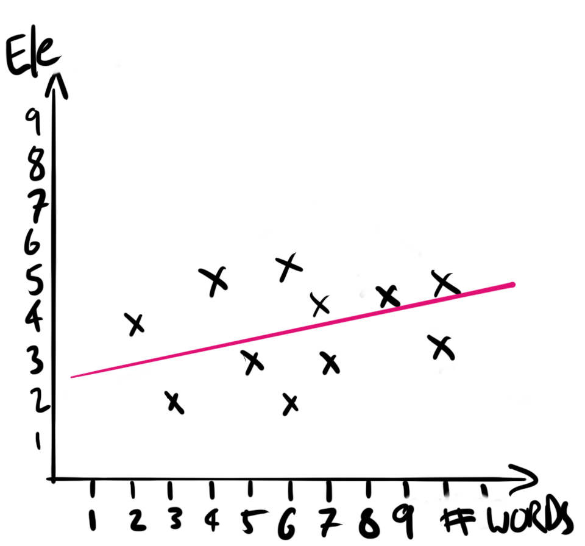
We simulate a dataset of how the number of e/Es could be distributed following the Poisson distribution (Figure 13.9).
count_of_e_simulation <-
tibble(
chapter = c(rep(1, 10), rep(2, 10), rep(3, 10)),
line = rep(1:10, 3),
number_words_in_line = runif(min = 0, max = 15, n = 30) |> round(0),
number_e = rpois(n = 30, lambda = 10)
)
count_of_e_simulation |>
ggplot(aes(y = number_e, x = number_words_in_line)) +
geom_point() +
labs(
x = "Number of words in line",
y = "Number of e/Es in the first ten lines"
) +
theme_classic() +
scale_fill_brewer(palette = "Set1")We can now gather and prepare our data. We download the text of the book from Project Gutenberg using gutenberg_download() from gutenbergr.
gutenberg_id_of_janeeyre <- 1260
jane_eyre <-
gutenberg_download(
gutenberg_id = gutenberg_id_of_janeeyre,
mirror = "https://gutenberg.pglaf.org/"
)
jane_eyre
write_csv(jane_eyre, "jane_eyre.csv")We will download it and then use our local copy to avoid overly imposing on the Project Gutenberg servers.
jane_eyre <- read_csv(
"jane_eyre.csv",
col_types = cols(
gutenberg_id = col_integer(),
text = col_character()
)
)
jane_eyre# A tibble: 21,001 × 2
gutenberg_id text
<int> <chr>
1 1260 JANE EYRE
2 1260 AN AUTOBIOGRAPHY
3 1260 <NA>
4 1260 by Charlotte Brontë
5 1260 <NA>
6 1260 _ILLUSTRATED BY F. H. TOWNSEND_
7 1260 <NA>
8 1260 London
9 1260 SERVICE & PATON
10 1260 5 HENRIETTA STREET
# ℹ 20,991 more rowsWe are interested in only those lines that have content, so we remove those empty lines that are just there for spacing. Then we can create counts of the number of e/Es in that line, for the first ten lines of each chapter. For instance, we can look at the first few lines and see that there are five e/Es in the first line and eight in the second.
jane_eyre_reduced <-
jane_eyre |>
filter(!is.na(text)) |> # Remove empty lines
mutate(chapter = if_else(str_detect(text, "CHAPTER") == TRUE,
text,
NA_character_)) |> # Find start of chapter
fill(chapter, .direction = "down") |>
mutate(chapter_line = row_number(),
.by = chapter) |> # Add line number to each chapter
filter(!is.na(chapter),
chapter_line %in% c(2:11)) |> # Remove "CHAPTER I" etc
select(text, chapter) |>
mutate(
chapter = str_remove(chapter, "CHAPTER "),
chapter = str_remove(chapter, "—CONCLUSION"),
chapter = as.integer(as.roman(chapter))
) |> # Change chapters to integers
mutate(count_e = str_count(text, "e|E"),
word_count = str_count(text, "\\w+")
# From: https://stackoverflow.com/a/38058033
) jane_eyre_reduced |>
select(chapter, word_count, count_e, text) |>
head()# A tibble: 6 × 4
chapter word_count count_e text
<int> <int> <int> <chr>
1 1 13 5 There was no possibility of taking a walk that day…
2 1 11 8 wandering, indeed, in the leafless shrubbery an ho…
3 1 12 9 but since dinner (Mrs. Reed, when there was no com…
4 1 14 3 the cold winter wind had brought with it clouds so…
5 1 11 7 so penetrating, that further outdoor exercise was …
6 1 1 1 question. We can verify that the mean and variance of the number of e/Es is roughly similar by plotting all of the data (Figure 13.10). The mean, in pink, is 6.7, and the variance, in blue, is 6.2. While they are not entirely the same, they are similar. We include the diagonal in Figure 13.10 (b) to help with thinking about the data. If the data were on the \(y=x\) line, then on average there would be one e/E per word. Given the mass of points below that line expect that on average there is less than one per word.
mean_e <- mean(jane_eyre_reduced$count_e)
variance_e <- var(jane_eyre_reduced$count_e)
jane_eyre_reduced |>
ggplot(aes(x = count_e)) +
geom_histogram() +
geom_vline(xintercept = mean_e,
linetype = "dashed",
color = "#C64191") +
geom_vline(xintercept = variance_e,
linetype = "dashed",
color = "#0ABAB5") +
theme_minimal() +
labs(
y = "Count",
x = "Number of e's per line for first ten lines"
)
jane_eyre_reduced |>
ggplot(aes(x = word_count, y = count_e)) +
geom_jitter(alpha = 0.5) +
geom_abline(slope = 1, intercept = 0, linetype = "dashed") +
theme_minimal() +
labs(
x = "Number of words in the line",
y = "Number of e/Es in the line"
)
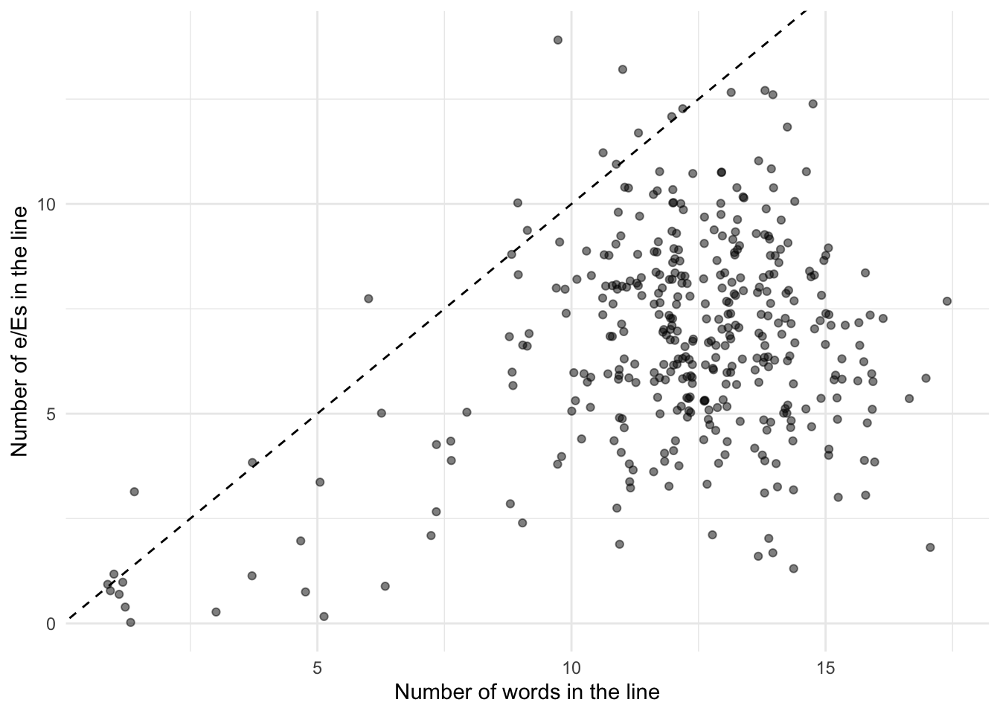
We could consider the following model:
\[
\begin{aligned}
y_i|\lambda_i &\sim \mbox{Poisson}(\lambda_i)\\
\log(\lambda_i) & = \beta_0 + \beta_1 \times \mbox{Number of words}_i\\
\beta_0 & \sim \mbox{Normal}(0, 2.5)\\
\beta_1 & \sim \mbox{Normal}(0, 2.5)
\end{aligned}
\] where \(y_i\) is the number of e/Es in the line and the explanatory variable is the number of words in the line. We could estimate the model using stan_glm().
jane_e_counts <-
stan_glm(
count_e ~ word_count,
data = jane_eyre_reduced,
family = poisson(link = "log"),
prior = normal(location = 0, scale = 2.5, autoscale = TRUE),
prior_intercept = normal(location = 0, scale = 2.5, autoscale = TRUE),
seed = 853
)
saveRDS(
jane_e_counts,
file = "jane_e_counts.rds"
)While we would normally be interested in the table of estimates, as we have seen that a few times now, rather than again creating a table of the estimates, we introduce plot_cap() from marginaleffects. We can use this to show the number of e/Es predicted by the model, for each line, based on the number of words in that line. Figure 13.11 makes it clear that we expect a positive relationship.
plot_predictions(jane_e_counts, condition = "word_count") +
labs(x = "Number of words",
y = "Average number of e/Es in the first 10 lines") +
theme_classic()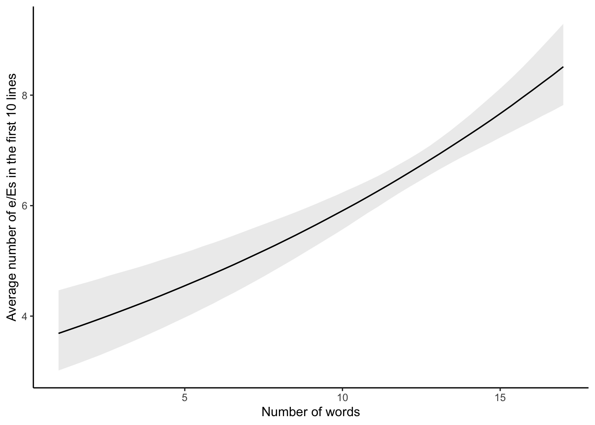
13.4 Negative binomial regression
One of the restrictions with Poisson regression is the assumption that the mean and the variance are the same. We can relax this assumption to allow over-dispersion by using a close variant, negative binomial regression.
Poisson and negative binomial models go hand in hand. It is often the case that we will end up fitting both, and then comparing them. For instance:
- Maher (1982) considers both in the context of results from the English Football League and discusses situations in which one may be considered more appropriate than the other.
- Smith (2002) considers the 2000 US presidential election and especially the issue of overdispersion in a Poisson analysis.
- Osgood (2000) compares them in the case of crime data.
13.4.1 Mortality in Alberta, Canada
Consider, somewhat morbidly, that every year each individual either dies or does not. From the perspective of a geographic area, we could gather data on the number of people who died each year, by their cause of death. The Canadian province of Alberta has made available the number of deaths, by cause, since 2001, for the top 30 causes each year.
As always we first sketch our dataset and model. A quick sketch of what the dataset could look like is Figure 13.12 (a), and a quick sketch of our model is Figure 13.12 (b)


We will simulate a dataset of cause of death distributed following the negative binomial distribution.
alberta_death_simulation <-
tibble(
cause = rep(x = c("Heart", "Stroke", "Diabetes"), times = 10),
year = rep(x = 2016:2018, times = 10),
deaths = rnbinom(n = 30, size = 20, prob = 0.1)
)
alberta_death_simulation# A tibble: 30 × 3
cause year deaths
<chr> <int> <int>
1 Heart 2016 194
2 Stroke 2017 177
3 Diabetes 2018 205
4 Heart 2016 138
5 Stroke 2017 222
6 Diabetes 2018 166
7 Heart 2016 147
8 Stroke 2017 151
9 Diabetes 2018 148
10 Heart 2016 192
# ℹ 20 more rowsWe can look at the distribution of these deaths, by year and cause (Figure 13.13). We have truncated the full cause of death because some are quite long. As some causes are not always in the top 30 each year, not all causes have the same number of occurrences.
alberta_cod <-
read_csv(
"https://open.alberta.ca/dataset/03339dc5-fb51-4552-97c7-853688fc428d/resource/3e241965-fee3-400e-9652-07cfbf0c0bda/download/deaths-leading-causes.csv",
col_types = cols(
`Calendar Year` = col_integer(),
Cause = col_character(),
Ranking = col_integer(),
`Total Deaths` = col_integer()
)
) |>
clean_names() |>
add_count(cause) |>
mutate(cause = str_trunc(cause, 30))If we were to look at the top-ten causes in 2021, we would notice a variety of interesting aspects (Table 13.6). For instance, we would expect that the most common causes would be present in all 21 years of our data. But we notice that the most common cause, “Other ill-defined and unknown causes of mortality”, is only in three years. “COVID-19, virus identified”, is only in two other years, as there were no known COVID deaths in Canada before 2020.
alberta_cod |>
filter(
calendar_year == 2021,
ranking <= 10
) |>
mutate(total_deaths = format(total_deaths, big.mark = ",")) |>
kable(
col.names = c("Year", "Cause", "Ranking", "Deaths", "Years"),
align = c("l", "r", "r", "r", "r"),
digits = 0, booktabs = TRUE, linesep = ""
)| Year | Cause | Ranking | Deaths | Years |
|---|---|---|---|---|
| 2021 | Other ill-defined and unkno… | 1 | 3,362 | 3 |
| 2021 | Organic dementia | 2 | 2,135 | 21 |
| 2021 | COVID-19, virus identified | 3 | 1,950 | 2 |
| 2021 | All other forms of chronic … | 4 | 1,939 | 21 |
| 2021 | Malignant neoplasms of trac… | 5 | 1,552 | 21 |
| 2021 | Acute myocardial infarction | 6 | 1,075 | 21 |
| 2021 | Other chronic obstructive p… | 7 | 1,028 | 21 |
| 2021 | Diabetes mellitus | 8 | 728 | 21 |
| 2021 | Stroke, not specified as he… | 9 | 612 | 21 |
| 2021 | Accidental poisoning by and… | 10 | 604 | 9 |
For simplicity we restrict ourselves to the five most common causes of death in 2021 of those that have been present every year.
alberta_cod_top_five <-
alberta_cod |>
filter(
calendar_year == 2021,
n == 21
) |>
slice_max(order_by = desc(ranking), n = 5) |>
pull(cause)
alberta_cod <-
alberta_cod |>
filter(cause %in% alberta_cod_top_five)alberta_cod |>
ggplot(aes(x = calendar_year, y = total_deaths, color = cause)) +
geom_line() +
theme_minimal() +
scale_color_brewer(palette = "Set1") +
labs(x = "Year", y = "Annual number of deaths in Alberta") +
facet_wrap(vars(cause), dir = "v", ncol = 1) +
theme(legend.position = "none")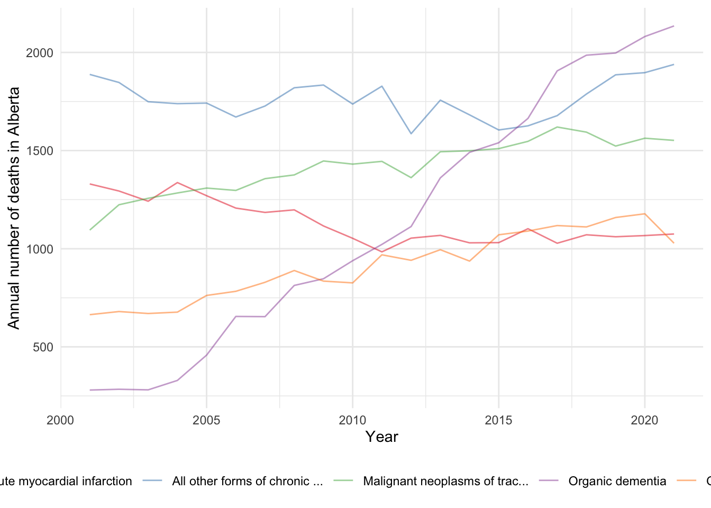
One thing that we notice is that the mean, 1,273, is different to the variance, 182,378 (Table 13.7).
| Min | Mean | Max | SD | Var | N | |
|---|---|---|---|---|---|---|
| total_deaths | 280 | 1273 | 2135 | 427 | 182378 | 105 |
We can implement negative binomial regression when using stan_glm() by specifying the negative binomial distribution in “family”. In this case, we run both Poisson and negative binomial.
cause_of_death_alberta_poisson <-
stan_glm(
total_deaths ~ cause,
data = alberta_cod,
family = poisson(link = "log"),
seed = 853
)
cause_of_death_alberta_neg_binomial <-
stan_glm(
total_deaths ~ cause,
data = alberta_cod,
family = neg_binomial_2(link = "log"),
seed = 853
)We can compare our different models (Table 13.8).
coef_short_names <-
c("causeAll other forms of chronic ischemic heart disease"
= "causeAll other forms of...",
"causeMalignant neoplasms of trachea, bronchus and lung"
= "causeMalignant neoplas...",
"causeOrganic dementia"
= "causeOrganic dementia",
"causeOther chronic obstructive pulmonary disease"
= "causeOther chronic obst..."
)
modelsummary(
list(
"Poisson" = cause_of_death_alberta_poisson,
"Negative binomial" = cause_of_death_alberta_neg_binomial
),
coef_map = coef_short_names
)| Poisson | Negative binomial | |
|---|---|---|
| causeAll other forms of... | 0.442 | 0.439 |
| (0.104) | ||
| causeMalignant neoplas... | 0.224 | 0.226 |
| (0.105) | ||
| causeOrganic dementia | 0.001 | 0.002 |
| (0.107) | ||
| causeOther chronic obst... | -0.214 | -0.217 |
| (0.104) | ||
| Num.Obs. | 105 | 105 |
| Log.Lik. | -5139.564 | -771.297 |
| ELPD | -5312.5 | -775.8 |
| ELPD s.e. | 1099.1 | 10.0 |
| LOOIC | 10625.0 | 1551.6 |
| LOOIC s.e. | 2198.3 | 20.0 |
| WAIC | 10793.7 | 1551.6 |
| RMSE | 308.24 | 308.26 |
The estimates are similar. We could use posterior predictive checks, introduced in Section 12.4, to show that the negative binomial approach is a better choice for this circumstance (Figure 13.14).
pp_check(cause_of_death_alberta_poisson) +
theme(legend.position = "bottom")
pp_check(cause_of_death_alberta_neg_binomial) +
theme(legend.position = "bottom")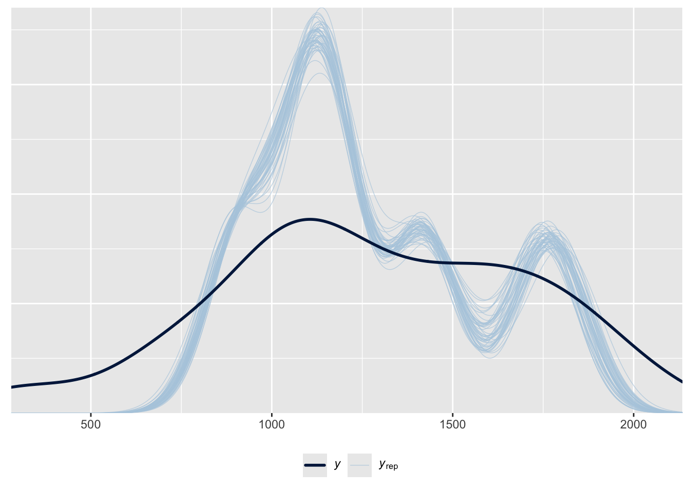
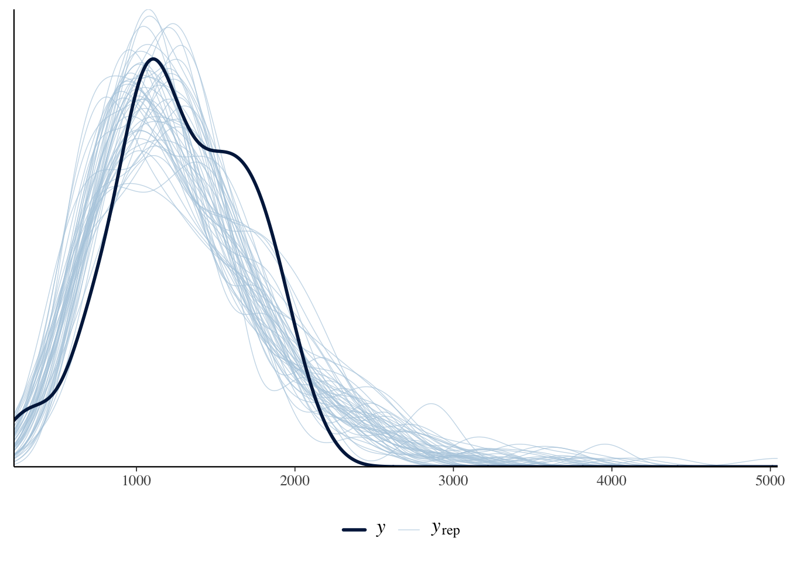
Finally, we can compare between the models using the resampling method leave-one-out (LOO) cross-validation (CV). This is a variant of cross-validation, where the size of each fold is one. That is to say, if there was a dataset with 100 observations, this LOO is equivalent to 100-fold cross validation. We can implement this in rstanarm with loo() for each model, and then compare between them with loo_compare() where the higher the better.1
We provide more information on cross-validation in Online Appendix H.
poisson <- loo(cause_of_death_alberta_poisson, cores = 2)
neg_binomial <- loo(cause_of_death_alberta_neg_binomial, cores = 2)
loo_compare(poisson, neg_binomial) elpd_diff se_diff
cause_of_death_alberta_neg_binomial 0.0 0.0
cause_of_death_alberta_poisson -4536.7 1089.5In this case we find that the negative binomial model is a better fit than the Poisson, because ELPD is larger.
13.5 Multilevel modeling
Multilevel modeling goes by a variety of names including “hierarchical”, and “random effects”. While there are sometimes small differences in meaning between disciplines, in general they refer to the same or at least similar ideas. The fundamental insight of multilevel modeling is that a lot of the time our observations are not completely independent of each other, and can instead be grouped. Accounting for that grouping when we model, can provide us with some useful information. For instance, there is a difference in the earnings of professional athletes depending on whether they compete in men’s or women’s events. If we were interested in trying to forecast the earnings of a particular athlete, based on their competition results, then knowing which type of competition the individual competed in would enable the model to make a better forecast.
Shoulders of giants
Dr Fiona Steele is a Professor of Statistics at the London School of Economics (LSE). After earning a PhD in Statistics from University of Southampton in 1996, she was appointed as a Lecturer at the LSE, before moving to the University of London, and the University of Bristol where she was appointed a full professor in 2008. She returned to the LSE in 2013. One area of her research is multilevel modeling and applications in demography, education, family psychology, and health. For instance, Steele (2007) looks at multilevel models for longitudinal data, and Steele, Vignoles, and Jenkins (2007) uses a multilevel model to look at the relationship between school resources and pupil attainment. She was awarded the Royal Statistical Society Guy Medal in Bronze in 2008.
We distinguish between three settings:
- Complete pooling, where we treat every observation as being from the same group, which is what we have been doing to this point.
- No pooling, where we treat every group separately, which might happen if we were to run a separate regression for each group.
- Partial pooling, where we allow group membership to have some influence.
For instance, consider we are interested in the relationship between GDP and inflation for each of the countries in the world. Complete pooling would have us put all the countries into the one group; no pooling would have us run separate regressions for each continent. We will now illustrate the partial pooling approach.
In general there are two ways to go about this:
- enable varying intercepts, or
- enable varying slopes.
In this book we consider only the first, but you should move onto Gelman, Hill, and Vehtari (2020), McElreath ([2015] 2020), and Johnson, Ott, and Dogucu (2022).
13.5.1 Simulated example: political support
Let us consider a situation in which the probability of support for a particular political party depends on an individual’s gender, and the state that they live in.
\[ \begin{aligned} y_i|\pi_i & \sim \mbox{Bern}(\pi_i) \\ \mbox{logit}(\pi_i) & = \beta_0 + \alpha_{g[i]}^{\mbox{gender}} + \alpha_{s[i]}^{\mbox{state}} \\ \beta_0 & \sim \mbox{Normal}(0, 2.5)\\ \alpha_{g}^{\mbox{gender}} & \sim \mbox{Normal}(0, 2.5)\mbox{ for }g=1, 2\\ \alpha_{s}^{\mbox{state}} & \sim \mbox{Normal}\left(0, \sigma_{\mbox{state}}^2\right)\mbox{ for }s=1, 2, \dots, S\\ \sigma_{\mbox{state}} & \sim \mbox{Exponential}(1) \end{aligned} \]
where \(\pi_i = \mbox{Pr}(y_i=1)\), there are two gender groups, because that is what is going to be available from the survey we will use in Chapter 15, and \(S\) is the total number of states. We include this in the function with “(1 | state)” within stan_glmer() from rstanarm (Goodrich et al. 2023). This term indicates that we are looking at a group effect by state, which means that the fitted model’s intercept is allowed to vary according by state.
set.seed(853)
political_support <-
tibble(
state = sample(1:50, size = 1000, replace = TRUE),
gender = sample(c(1, 2), size = 1000, replace = TRUE),
noise = rnorm(n = 1000, mean = 0, sd = 10) |> round(),
supports = if_else(state + gender + noise > 50, 1, 0)
)
political_support# A tibble: 1,000 × 4
state gender noise supports
<int> <dbl> <dbl> <dbl>
1 9 1 11 0
2 26 1 3 0
3 29 2 7 0
4 17 2 13 0
5 37 2 11 0
6 29 2 9 0
7 50 2 3 1
8 20 2 3 0
9 19 1 -1 0
10 3 2 7 0
# ℹ 990 more rowsvoter_preferences <-
stan_glmer(
supports ~ gender + (1 | state),
data = political_support,
family = binomial(link = "logit"),
prior = normal(location = 0, scale = 2.5, autoscale = TRUE),
prior_intercept = normal(location = 0, scale = 2.5, autoscale = TRUE),
seed = 853
)
saveRDS(
voter_preferences,
file = "voter_preferences.rds"
)voter_preferencesstan_glmer
family: binomial [logit]
formula: supports ~ gender + (1 | state)
observations: 1000
------
Median MAD_SD
(Intercept) -4.4 0.7
gender 0.4 0.3
Error terms:
Groups Name Std.Dev.
state (Intercept) 2.5
Num. levels: state 50
------
* For help interpreting the printed output see ?print.stanreg
* For info on the priors used see ?prior_summary.stanregIt is worth trying to look for opportunities to use a multilevel model when you come to a new modeling situation, especially one where inference is the primary concern. There is often some grouping that can be taken advantage of to provide the model with more information.
When we move to multilevel modeling, it is possible that some rstanarm models will result in a warning about “divergent transitions”. For the purposes of getting a model working for this book, if there are just a handful of warnings and the Rhat values of the coefficients are all close to one (check this with any(summary(change_this_to_the_model_name)[, "Rhat"] > 1.1)), then just ignore it. If there are more than a handful, and/or any of the Rhats are not close to one, then add “adapt_delta = 0.99” as an argument to stan_glmer() and re-run the model (keeping in mind that it will take longer to run). If that does not fix the issue, then simplify the model by removing a variable. We will see an example in Chapter 15 when we apply MRP to the 2020 US election, where the “adapt_delta” strategy fixes the issue.
13.5.2 Austen, Brontë, Dickens, and Shakespeare
As an example of multilevel modeling, we consider data from Project Gutenberg on the length of books by four authors: Jane Austen, Charlotte Brontë, Charles Dickens, and William Shakespeare. We would expect that Austen, Brontë, and Dickens, as they wrote books, will have longer books than Shakespeare, as he wrote plays. But it is not clear what difference we should expect between the three book authors.
authors <- c("Austen, Jane", "Dickens, Charles",
"Shakespeare, William", "Brontë, Charlotte")
# The document values for duplicates and letters that we do not want
dont_get_shakespeare <-
c(2270, 4774, 5137, 9077, 10606, 12578, 22791, 23041, 23042, 23043,
23044, 23045, 23046, 28334, 45128, 47518, 47715, 47960, 49007,
49008, 49297, 50095, 50559)
dont_get_bronte <- c(31100, 42078)
dont_get_dickens <-
c(25852, 25853, 25854, 30368, 32241, 35536, 37121, 40723, 42232, 43111,
43207, 46675, 47529, 47530, 47531, 47534, 47535, 49927, 50334)
books <-
gutenberg_works(
author %in% authors,
!gutenberg_id %in%
c(dont_get_shakespeare, dont_get_bronte, dont_get_dickens)
) |>
gutenberg_download(
meta_fields = c("title", "author"),
mirror = "https://gutenberg.pglaf.org/"
)
write_csv(books, "books-austen_bronte_dickens_shakespeare.csv")books <- read_csv(
"books-austen_bronte_dickens_shakespeare.csv",
col_types = cols(
gutenberg_id = col_integer(),
text = col_character(),
title = col_character(),
author = col_character()
)
)lines_by_author_work <-
books |>
summarise(number_of_lines = n(),
.by = c(author, title))
lines_by_author_work# A tibble: 125 × 3
author title number_of_lines
<chr> <chr> <int>
1 Austen, Jane Emma 16488
2 Austen, Jane Lady Susan 2525
3 Austen, Jane Love and Freindship [sic] 3401
4 Austen, Jane Mansfield Park 15670
5 Austen, Jane Northanger Abbey 7991
6 Austen, Jane Persuasion 8353
7 Austen, Jane Pride and Prejudice 14199
8 Austen, Jane Sense and Sensibility 12673
9 Brontë, Charlotte Jane Eyre: An Autobiography 21001
10 Brontë, Charlotte Shirley 25520
# ℹ 115 more rowsauthor_lines_rstanarm <-
stan_glm(
number_of_lines ~ author,
data = lines_by_author_work,
family = neg_binomial_2(link = "log"),
prior = normal(location = 0, scale = 3, autoscale = TRUE),
prior_intercept = normal(location = 0, scale = 3, autoscale = TRUE),
seed = 853
)
saveRDS(
author_lines_rstanarm,
file = "author_lines_rstanarm.rds"
)
author_lines_rstanarm_multilevel <-
stan_glmer(
number_of_lines ~ (1 | author),
data = lines_by_author_work,
family = neg_binomial_2(link = "log"),
prior = normal(location = 0, scale = 3, autoscale = TRUE),
prior_intercept = normal(location = 0, scale = 3, autoscale = TRUE),
seed = 853
)
saveRDS(
author_lines_rstanarm_multilevel,
file = "author_lines_rstanarm_multilevel.rds"
)modelsummary(
list(
"Neg binomial" = author_lines_rstanarm,
"Multilevel neg binomial" = author_lines_rstanarm_multilevel
)
)| Neg binomial | Multilevel neg binomial | |
|---|---|---|
| (Intercept) | 9.245 | 8.980 |
| (0.342) | (0.371) | |
| authorBrontë, Charlotte | 0.686 | |
| (0.576) | ||
| authorDickens, Charles | 0.019 | |
| (0.364) | ||
| authorShakespeare, William | -0.875 | |
| (0.361) | ||
| Num.Obs. | 125 | 125 |
| ICC | 1.0 | |
| Log.Lik. | -1234.105 | -1234.124 |
| ELPD | -1237.3 | -1237.2 |
| ELPD s.e. | 11.5 | 11.5 |
| LOOIC | 2474.7 | 2474.4 |
| LOOIC s.e. | 23.1 | 23.1 |
| WAIC | 2474.6 | 2474.4 |
| RMSE | 8954.42 | 8984.71 |
Table 13.9 is a little empty for the multilevel model, and we often use graphs to avoid overwhelming the reader with numbers (we will see examples of this in Chapter 15). For instance, Figure 13.15 shows the distribution of draws for each of the four authors using spread_draws() from tidybayes.
author_lines_rstanarm_multilevel |>
spread_draws(`(Intercept)`, b[, group]) |>
mutate(condition_mean = `(Intercept)` + b) |>
ggplot(aes(y = group, x = condition_mean)) +
stat_halfeye() +
theme_minimal()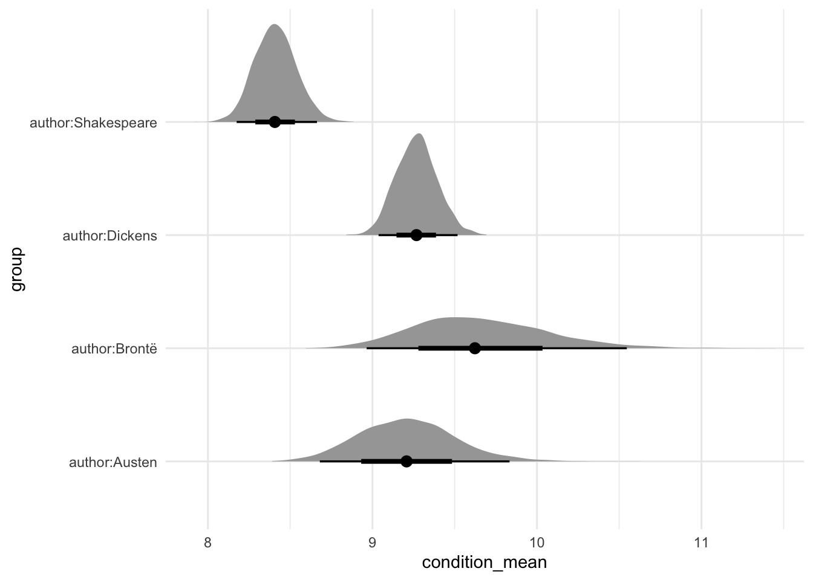
In this case, we see that we typically expect Brontë to write the longest books of the three book authors. Shakespeare, as expected, typically wrote works with the fewest lines.
13.6 Concluding remarks
In this chapter we have considered generalized linear models and introduced multilevel modeling. We built on the foundation established in Chapter 12 and provided some essentials for Bayesian model building. As mentioned in Chapter 12, this is enough to get started. Hopefully you are excited to learn more and to do that you should start with the modeling books recommended in Chapter 17.
Over the course of Chapter 12 and Chapter 13 we have covered a variety of approaches for Bayesian models. But we have not done everything for every model.
It is difficult to be definitive about what is “enough” because it is context specific, but the following checklist, drawn from concepts introduced across Chapter 12 and Chapter 13 would be sufficient for most purposes when you are getting started. In the model section of the paper, write out the model using equations and include a few paragraphs of text explaining the equations. Then justify the model choices, and briefly detail any alternatives that you considered. Finish with a sentence explaining how the model was fit, which in this case is likely to be with rstanarm, and that diagnostics are available in a cross-referenced appendix. In that appendix you should include: prior predictive checks, trace plots, Rhat plots, posterior distributions, and posterior predictive checks.
In the results section you should include a table of the estimates, built using modelsummary, and talk through them, likely with the help of marginaleffects. It may also be useful to include a graph of your results, especially if you are using a multilevel model, with the help of tidybayes. The model itself should be run in a separate R script. It should be preceded by tests of class and the number of observations. It should be followed by tests of the coefficients. These should be based on simulation. You should save the model in that R script using saveRDS(). In the Quarto document, you should read in that model using readRDS().
13.7 Exercises
Scales
- (Plan) Consider the following scenario: A person is interested in the number of deaths, attributed to cancer, in Sydney, Australia. They collect data from the five largest hospitals, for the past 20 years. Please sketch out what that dataset could look like and then sketch a graph that you could build to show all observations.
- (Simulate) Please further consider the scenario described and simulate the situation, along with three predictor variables that are associated with the number of deaths, by cause. Please include at least ten tests based on the simulated data.
- (Acquire) Please describe one possible source of such a dataset.
- (Explore) Please use
ggplot2to build the graph that you sketched. Then userstanarmto build a model. - (Communicate) Please write two paragraphs about what you did.
Questions
- When should we consider logistic regression (pick one)?
- Continuous outcome variable.
- Binary outcome variable.
- Count outcome variable.
- We are interested in studying how voting intentions in the 2020 US presidential election vary by an individual’s income. We set up a logistic regression model to study this relationship. In this study, one possible outcome variable would be (pick one)?
- Whether the respondent is a US citizen (yes/no)
- The respondent’s personal income (high/low)
- Whether the respondent is going to vote for Biden (yes/no)
- Who the respondent voted for in 2016 (Trump/Clinton)
- We are interested in studying how voting intentions in the 2020 US presidential election vary by an individual’s income. We set up a logistic regression model to study this relationship. In this study, some possible predictor variables could be (select all that apply)?
- The race of the respondent (white/not white)
- The respondent’s marital status (married/not)
- Whether the respondent is going to vote for Biden (yes/no)
- The mean of a Poisson distribution is equal to its?
- Median.
- Standard deviation.
- Variance.
- Please redo the
rstanarmexample of US elections but include additional variables. Which variable did you choose, and how did the performance of the model improve? - Please create the graph of the density of the Poisson distribution when \(\lambda = 75\).
- From Gelman, Hill, and Vehtari (2020), what is the offset in Poisson regression?
- Redo the Jane Eyre example, but for “A/a”.
- The twentieth century British statistician George Box, famously said, “[s]ince all models are wrong the scientist must be alert to what is importantly wrong. It is inappropriate to be concerned about mice when there are tigers abroad.” (Box 1976, 792). Discuss, with the help of examples and citations.
Tutorial
Please consider Maher (1982), Smith (2002), or Cohn (2016). Build a simplified version of their model. Obtain some recent relevant data, estimate the model, and discuss your choice between logistic, Poisson, and negative binomial regression.
Paper
At about this point the Spadina Paper from Online Appendix D would be appropriate.
By way of background, LOO-CV is not done by
loo(), because it would be too computationally intensive. Instead an approximation is done which provides the expected log point wise predictive density (ELPD). Therstanarmvignettes provide more detail.↩︎